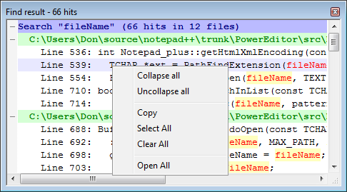

| Précédent: Rechercher dans les fichiers | Rechercher | Suivant: Recherche hors boîte de dialogue |

Les résultats des recherches qui renvoient plusieurs occurrences sont affichées dans une fenêtre ancrable (voir
Fenêtre ancrable pour plus d'informations). Les résultats sont triés par fichier et par ligne de réponse,
qui peuvent être repliés pour chaque fichier , en double-cliquant le nom du fichier (voir aussi
Indentation: Pliage / dépliage ).
Les résultats de cette « fenêtre Résultats » peuvent être supprimés en utilisant la touche DEL, par ligne, par dossier ou par recherches effectuées. Ces lignes peuvent être manipulées en utilisant le menu contextuel par clic droit. En outre, le texte de la fenêtre peut être copié pour traitement ultérieur. Double-clic sur un résultat ouvrira le fichier et à la ligne citée. Utilisation de ouvre tous les fichiers ayant une réponse dans les recherches affichées.
montre cette fenêtre si elle est cachée et non vide, et permet de basculer le focus entre elle et la fenêtre principales de Notepad++. Lorsque la fenêtre n'est pas affichée, et permettent de naviguer parmi les résultats.
La couleurs des résultats dépend de leurs types. Voir Configurateur de coloration syntaxique pour obtenir les renseignements sur la façon de changer les couleurs.